利用マニュアル for Teams
Microsoft Teams のチャットから、出張申請の作成、予約サイトでの手配、承認、予約の確定、キャンセル、出張後の領収書の提出までの日々の操作を説明します。
1全体の流れ
出張の手配は「申請 → 手配 → 事前承認（発注） → 完了承認」の順に進みます。操作はすべて Teams の 1Approval AI Bot とのチャットで行い、申請の内容は貴社の連携先ワークフロー（Microsoft 365 SharePointなど）に自動で保存されます。予約サイトで選んだ内容も自動で申請に反映されるので、転記は不要です。
申請フォームを保存
手配・申し込み
（発注が行われる）
「予約済」になる
| 申請のステータス | 意味 | 次に操作する人 |
|---|---|---|
| 未処理 | 申請番号の発行直後。予約サイトで手配できる状態 | 申請者 |
| 事前承認依頼中 | 承認者の確認待ち | 承認者 |
| 却下 | 承認者に差し戻された状態。手配をやり直して「事前承認依頼」で再度依頼します | 申請者 |
| 事前承認済 | 承認され、予約サイトへ発注済み。明細の予約状況を確認する段階 | 申請者 |
| 事前承認済（予約失敗） | 承認は済んでいるが、予約に失敗した明細がある状態（一部でも全部でも。5.2） | 申請者 |
| 追加承認依頼中 | 失敗分を再手配して追加承認を待っている | 承認者 |
| 完了承認依頼中 | 最終承認待ち | 承認者 |
| 完了承認済 | 手続き完了（CSV 出力の対象になります） | — |
| 追加承認却下 | 追加承認が却下された状態（終了）。必要なら申請し直します | — |
| 取り下げ | 申請者が申請を取り下げた状態（終了。7 章） | — |
事前承認の段階で承認者が承認カードの 差戻し を押すと、ステータスは「却下」になり、申請者の Teams に通知が届きます（完了承認の段階の差戻しは「事前承認済」に、追加承認の段階の差戻しは「事前承認済（予約失敗）」に戻ります。3.2）。申請者は手配をやり直して（2.3 のカートを空にする手順）、事前承認依頼 で再度承認者へ依頼します。
本書の「申請者」は申請フォームを保存した方です。代理で作成した場合、承認後の操作（完了承認依頼など）のカードは作成した方の Teams に届きます。
本書では Teams の画面での操作と、ピカパカ（予約サイト）の画面での操作を色で区別しています。画面例の出張者は「鈴木 花子」、承認者は「山田 太郎」です。
Teams で操作した内容は、連携先ワークフロー（SharePoint の出張申請サイト）の申請書にもそのまま反映されます。ボットが表示する申請番号と、カードの 申請書を開く から、いつでも申請書を確認できます。
2申請する（申請者）
- Teams の左側の チャット から 1Approval AI Bot を開き、出張申請フォームを開く をクリックします（ボットが見つからない場合は 9 章）。
- 件名・出張者（自分が自動で入ります）・承認者・出張先・出張目的・出発日・帰着日を入力します。出張者・承認者は Microsoft 365 のアカウントから選びます（名前の一部を入力すると候補が出ます）。
- 必要に応じてスケジュール（日程・訪問先・目的・用件）と備考を入力します。
- 保存する をクリックします。
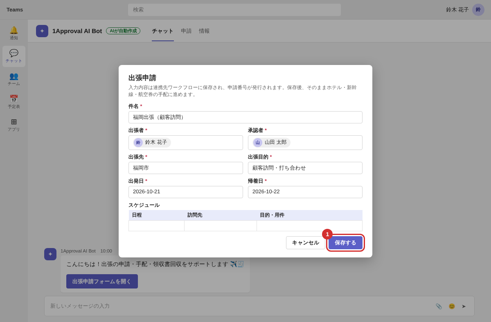
完了の確認ボットから「申請番号 ○○ を発行しました」と返信があり、その下に手配カード（🏨 ホテル / 🚅 新幹線 / ✈️ 航空券）が表示されれば OK です。申請はこの時点で連携先ワークフローに「未処理」として保存されています。
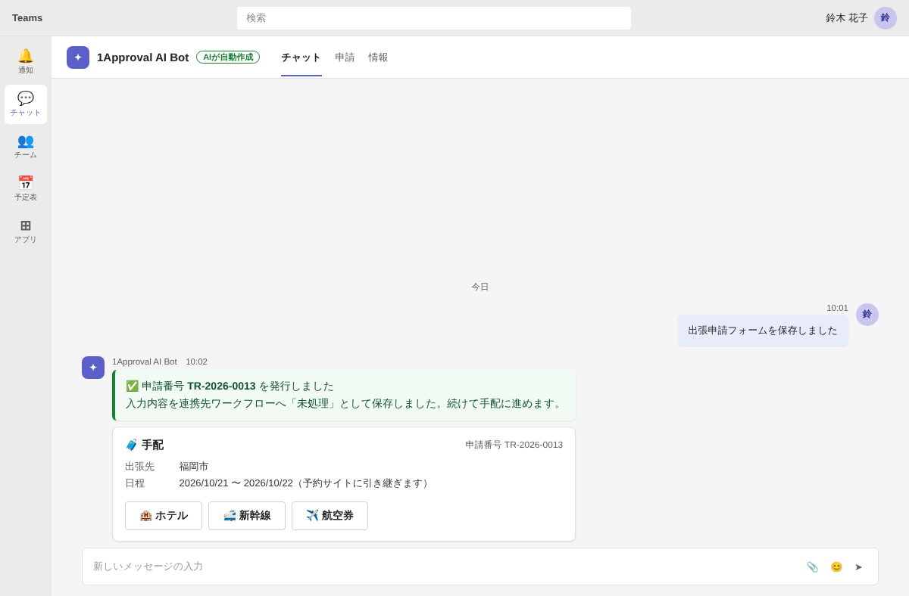
必須項目（*）をすべて入力します。承認者は1 人だけ選びます。出発日は翌日以降の日付にします（当日出発の申請は登録できません）。帰着日は出発日以降にします。該当する項目にエラーが表示されます。
フォームには予約の項目はありません。予約内容は予約サイトから自動で申請に入るので、手で入力する必要はありません。
2.1 予約サイトで手配する
- Teams の手配カードの 🏨 ホテル / 🚅 新幹線 / ✈️ 航空券 をクリックします。予約サイトが開きます（Microsoft 365 のアカウントで自動的にログインした状態です）。
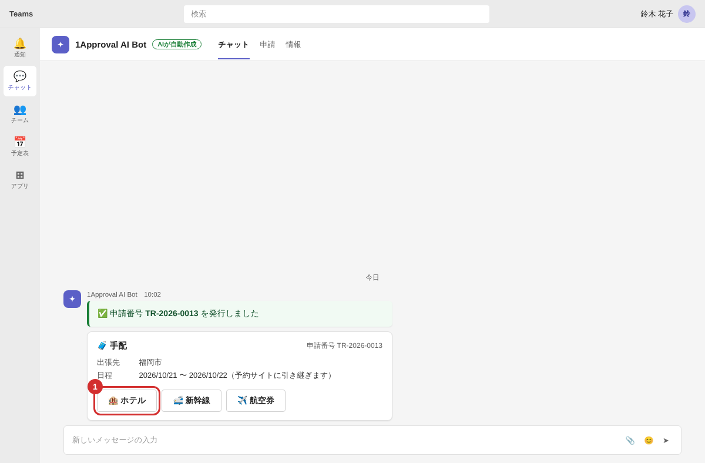
- 検索条件を入れて検索します。出張の日程は申請から引き継がれています。
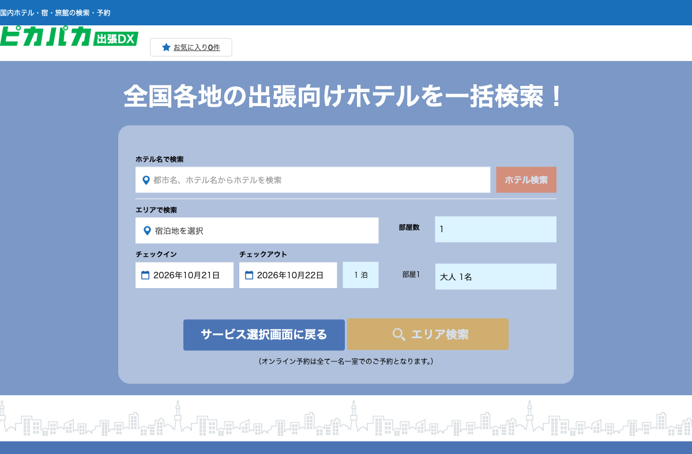
検索すると、条件に合うホテルの一覧が表示されます。
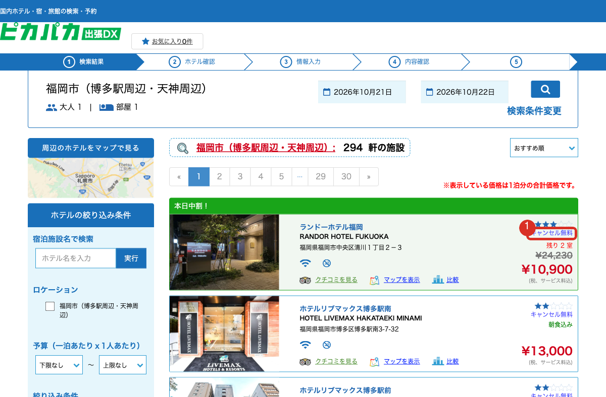
- 商品（ホテルならプラン）を選び、宿泊者情報などを入力して 入力内容確認 → 申し込みを確定します。
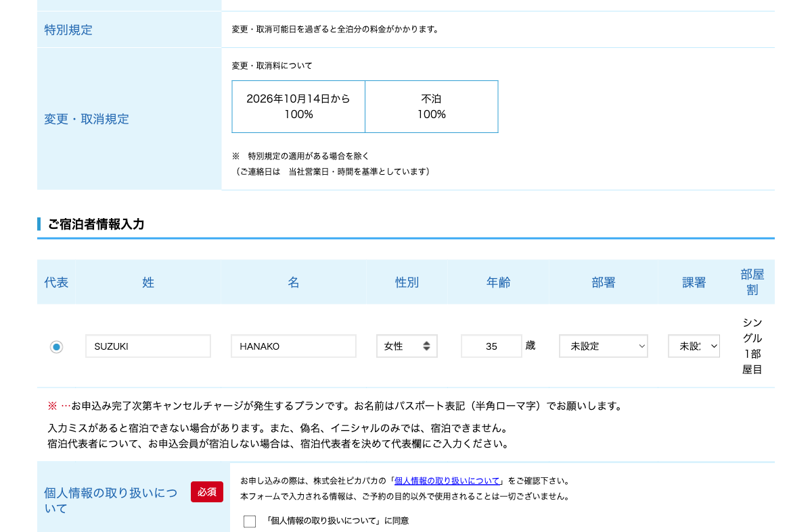
入力を終えて進むと、申し込み内容の確認画面になります。
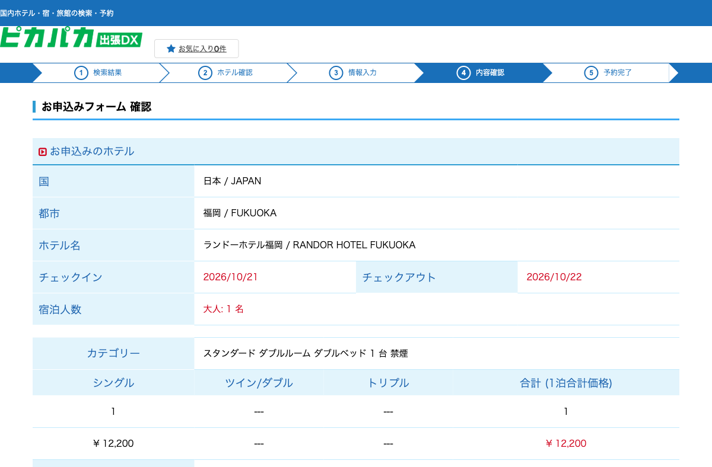
- 申し込みが完了すると、予約サイトが閉じて Teams のチャットに戻ります（予約内容は戻る前に申請へ書き込まれています）。
カートのデータをミラーした状態になっていますが、在庫などの確保はされていません。
申し込みの途中で予約サイトの画面を閉じると、申請に予約内容が反映されません。最後まで進めてから Teams に戻ってください。
2.1.1 新幹線の場合
新幹線の予約サイトは、本サイトの仕様と同様で、申し込み当日から 1 ヵ月先までしか予約できません。
https://www.jreast.co.jp/kippu/02.html
- 手配カードの 🚅 新幹線 をクリックすると、「新幹線検索」の画面が開きます。
- 使用路線（東海道・山陽新幹線 など）を選びます。選ぶと乗車駅・到着駅の候補がその路線の駅に切り替わります。
- 往路の乗車駅・到着駅・出発日時を選びます。日付は申請の出発日が入っています。復路は 復路自動入力 を選ぶと往路の逆区間が入ります。
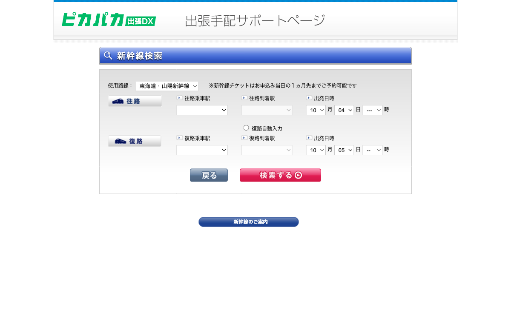
- 検索する をクリックします。往路・復路それぞれの料金（自由席）が表示されるので、料金の左の ○ を選び お申し込み画面に進む をクリックします。表示される料金は通常期の目安で、別途送料がかかります（画面の注意事項）。
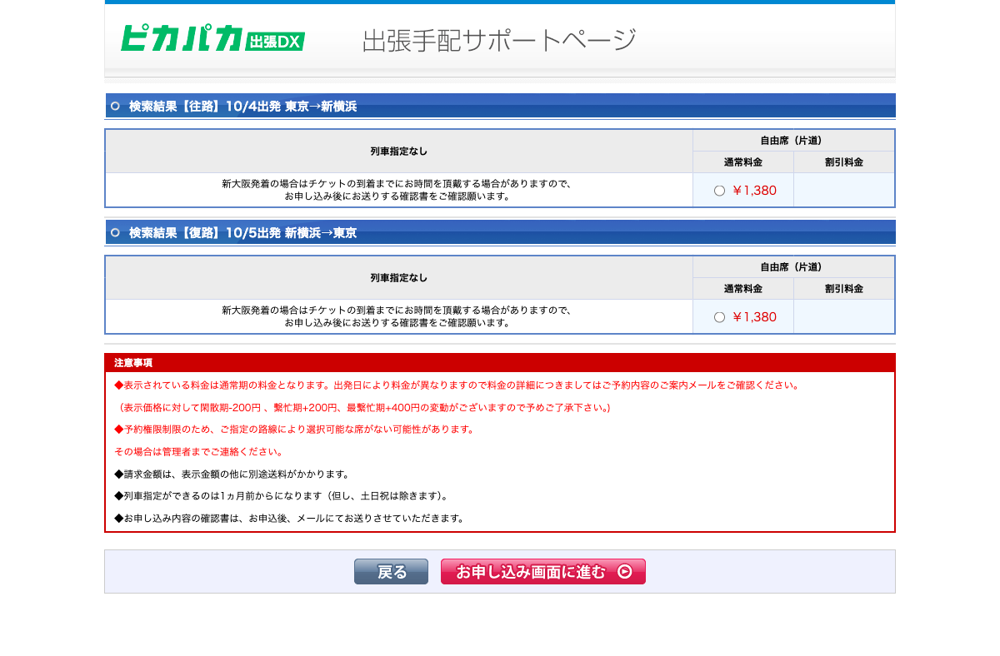
- 申し込み画面で枚数・到着期限・搭乗者名（カタカナ）・会社名・お届け先・宛名・電話番号・メールアドレスを確認・入力し、「個人情報の取り扱いについて」に同意して 内容を確認して送信画面へ → 送信します。送信が完了すると、予約サイトが閉じて Teams に戻ります。
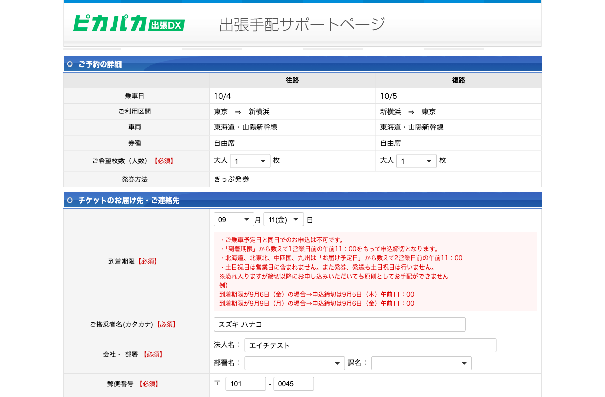
発券方法が「きっぷ発券」の場合は、指定した到着期限までにお届け先へ郵送されます。乗車予定日と同じ日の申し込みはできず、到着期限の 1 営業日前の午前 11 時が申込締切です（北海道・北東北・中四国・九州へのお届けは 2 営業日前。土日祝は営業日に含まれません）。締切を過ぎると手配できないので、余裕をもって申し込んでください。
新幹線TOP画面にて、路線選択の際にJR東日本管轄を選ぶと、発券方法の選択画面が表示されますので、そこでQRコード発券をお選びいただく形になります。
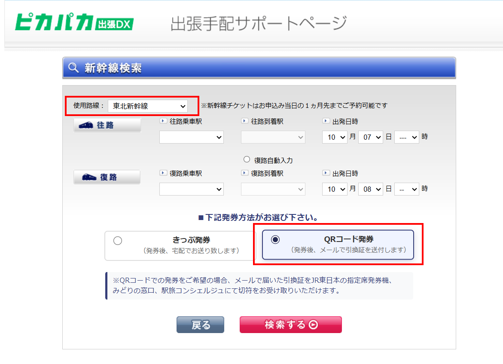
Teams に戻ると、取り込み結果に往路と復路の 2 件が同じ予約番号で表示されます。
2.1.2 航空券の場合
- 手配カードの ✈️ 航空券 をクリックすると、国内航空券の検索画面が開きます。往復 / 片道 を選び、出発地・到着地を選びます。行き・帰りの日付は申請の出発日・帰着日が入っています。
- 最安値を検索 をクリックします。
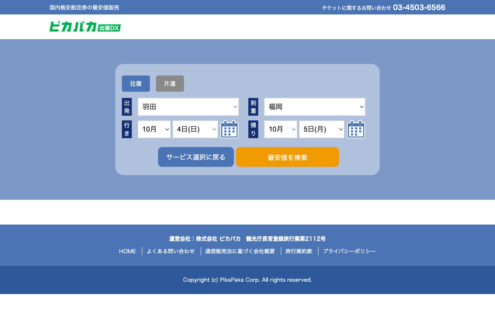
- 「行きの便を選択してください」の一覧で、便ごとに割引運賃または変更可能運賃の ○ をクリックします。往復の場合は続けて「帰りの便」も同じように選びます。
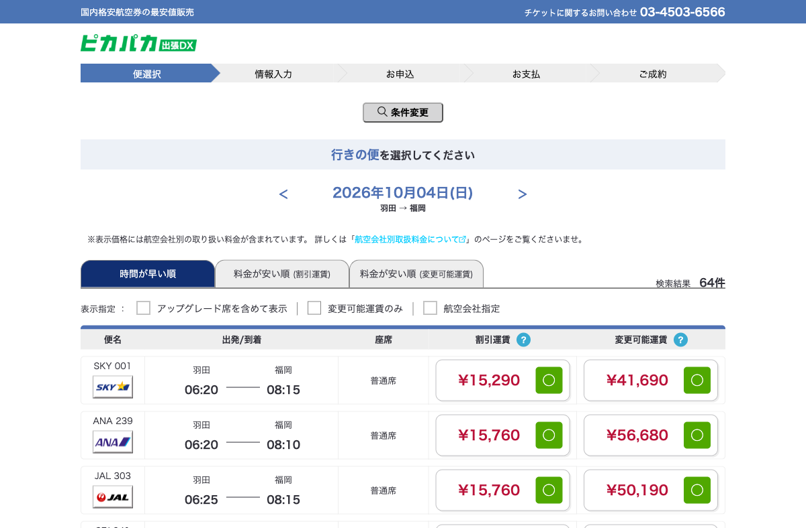
- 「情報入力」で選んだ航空券と搭乗者情報を確認し、決済方法（法人一括請求）と「個人情報の取り扱いについて」の同意を確認して 確認に進む → 申し込みを確定します。確定すると、予約サイトが閉じて Teams に戻ります。
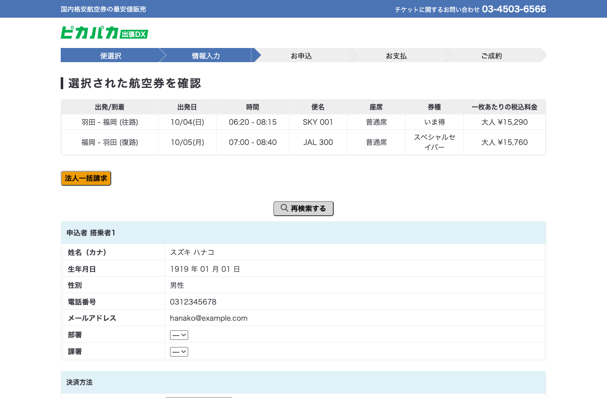
Teams に戻ると、取り込み結果に往路と復路の 2 件が同じ予約番号で表示されます（片道の場合は 1 件）。
2.2 Teams に戻る
Teams に戻ると、ボットから「予約内容を申請に取り込みました」というメッセージが届き、選んだ予約番号・予約内容・金額が表示されます。同じ内容は連携先ワークフローの申請書の予約明細にも入っています。この時点の明細のステータスは「未予約」のままで正常です。
複数のサービスを手配する場合は、➕ 手配を追加する をクリックして手配カードを出し、続けて別のサービス（例: ホテルの次に新幹線）を同じように申し込みます。同じサービスを申し込み直すと、そのサービスの明細は新しい内容に置き換わります。
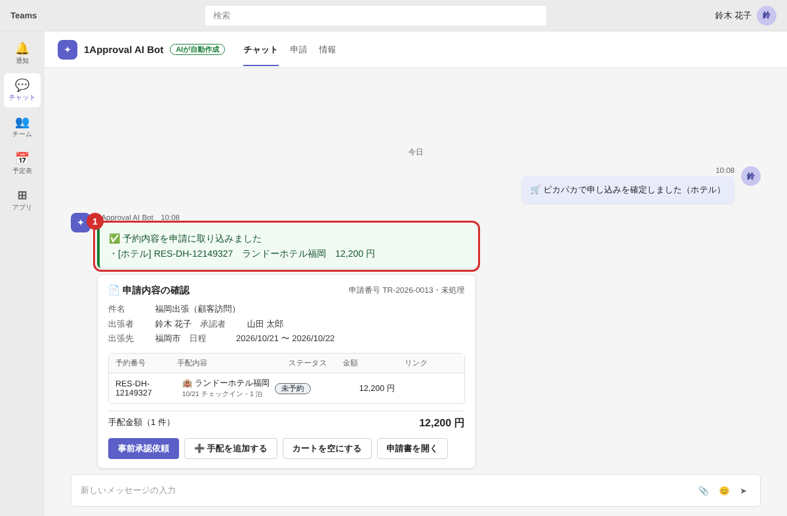
完了の確認取り込み結果に予約番号（例: RES-DH-…）と金額が表示されていれば手配は完了です。
取り込みのメッセージが届く前に次の操作をしたり、連携先ワークフローの申請書を同時に編集したりすると、反映された内容が消えることがあります。取り込みのメッセージを確認してから次の操作に進み、同じ申請の同時編集は避けてください。
2.3 承認を依頼する
- 手配がそろったら、申請内容の確認カードで件名・承認者・出張先・日程・手配金額を確認します。
- 事前承認依頼 をクリックします。
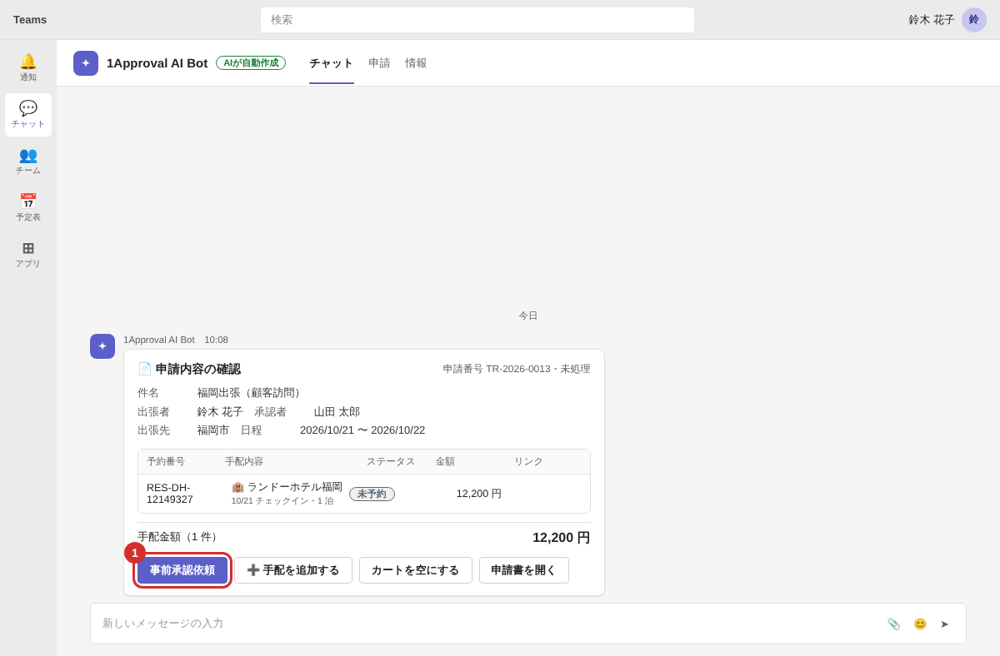
完了の確認ボットから「ステータスが『事前承認依頼中』に変わりました」と返信があれば依頼完了です。承認者の Teams に承認カードが届き、以降は承認者の操作に移ります。
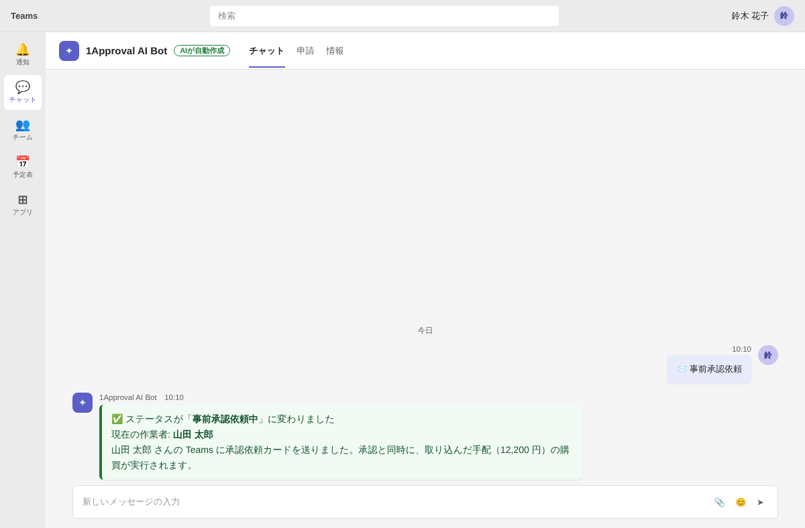
手配をやり直すには、申請内容の確認カードの カートを空にする から、やり直したいサービス（ホテル・新幹線・航空券）を選んで確定します（そのサービスに明細があり、ステータスが未処理・事前承認依頼中・却下のときだけ操作できます）。「カートを空にしました」と返信があるまで確定していません。明細が残ったままですと、発注されますのでご注意くださいませ。
3承認する（承認者）
予約サイトへの発注や、価格確認中・エラー・キャンセル手配中の明細がある申請を止める確認は、Teams の承認カード、または 1approval が組み込まれた申請書の詳細画面で承認のボタンを押したときにだけ行われます。連携先ワークフローの一括承認機能や API、Power Automate のフローなど、これらを通らずにステータスを進めると、発注が行われないままステータスだけが進みます。承認は 1 件ずつ行ってください。
3.1 事前承認（このときに発注が行われます）
- Teams に届いた「出張承認依頼」カードを開きます（1Approval AI Bot とのチャットとアクティビティに届きます）。
- 申請者・出張先・日程・目的・手配の明細（予約内容・金額）・合計を確認します。詳しく見る場合は 申請書を開く から連携先ワークフローの申請書を開きます。
- 問題なければ ✓ 承認して即発券。内容に問題がある場合は 差戻し で、ステータスが「却下」になり申請者に通知されます。申請者は手配をやり直して 事前承認依頼 で再度依頼します。
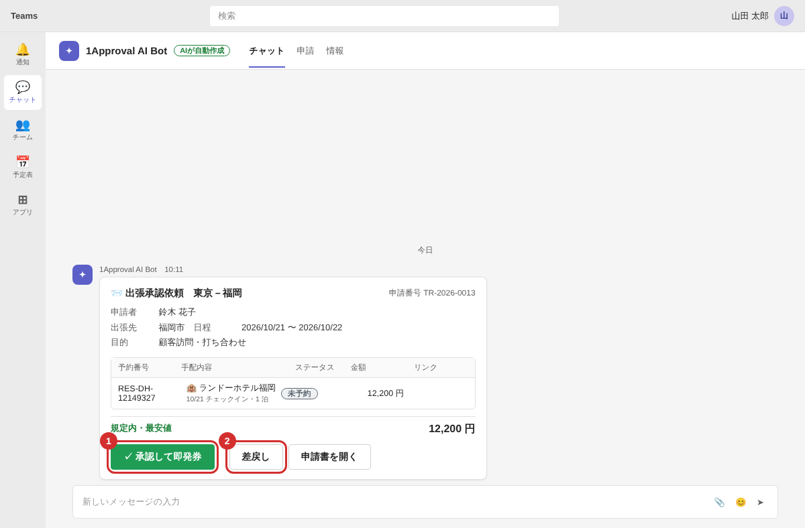
承認すると、その場で予約サイトへ発注が行われます。通常は承認から 10 秒〜数十秒で予約サイト側の確定が届き、明細のステータスが予約済に変わります。確定に時間がかかる場合は、それまで手配中と表示されます（4 章）。
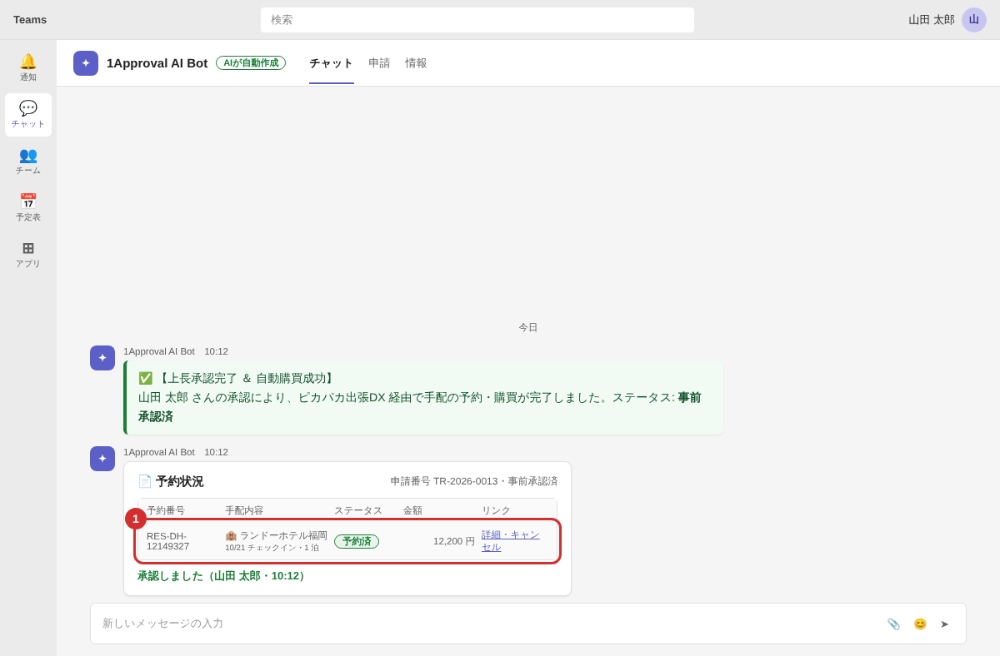
完了の確認承認カードが「承認しました」に変わり、申請のステータスが「事前承認済」、明細の予約状況が「予約済」になっていれば確定です。「手配中」の場合は発注は受け付けられており、確定を待っている状態です。
承認の実行後、明細の予約状況が更新される（通常は「予約済」、確定が遅い場合は「手配中」に変わる）のを最大 30 秒待ちます。通信の遅れなどで間に合わないと「注文の完了がタイムアウトしました。申請の状態を確認してください。」と表示され、ステータスは元のまま（事前承認なら「事前承認依頼中」、追加承認なら「追加承認依頼中」）・承認のボタンも残ります（発注そのものは送られている場合があります）。
カードの 最新の状態を表示 または申請書で明細を確認し、「未予約」の明細が残っていないことを確認してから承認を押すと、発注は再送されずステータスだけが進みます（「手配中」「仮押さえ中」「予約済」「予約失敗」「キャンセル済」の明細は再送されません）。「未予約」の明細が残っている間は押し直さないでください（発注の受け付けは済んでいて記録だけが遅れている場合があり、押し直すと同じ内容が二重に発注されるおそれがあります）。しばらく待っても変わらない場合は管理者へお問い合わせください。
差し戻しても古い明細は残ります。申請者は先に確認カードの「カートを空にする」を行ってから、手配カードで選び直してください（2.3）。古い明細が残ったまま再度承認すると、古い予約も一緒に発注されます。選び直したら 事前承認依頼 で承認者へ再度依頼します。
3.2 完了承認（最終承認）
- 申請者: 明細がすべて「予約済」になったら、ボットのカードの 完了承認依頼 をクリックします。「未予約」「手配中」「仮押さえ中」の明細が残っている間は押さないでください（システムは止めませんが、その後に届いた予約失敗が通知されず、失敗を含んだまま完了扱いになります）。現地での立替費用がある場合は、先に領収書を提出しておきます（下の「出張から戻ったら」）。
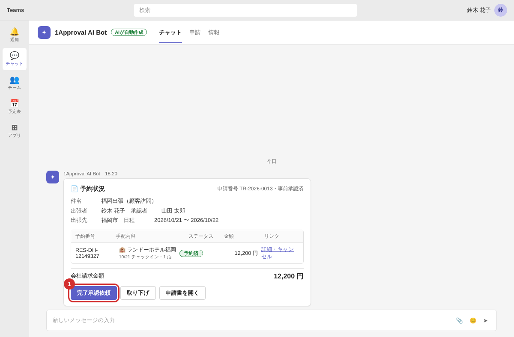
- 承認者: Teams に届いた「完了承認依頼」カードで、明細がすべて「予約済」であることを確認して 完了承認。ステータスが「完了承認済」になり手続き完了です（一覧・CSV の集計対象になるのはこの状態です）。内容に問題があれば 差戻し で「事前承認済」に戻ります（発注済みの予約はそのまま有効です）。
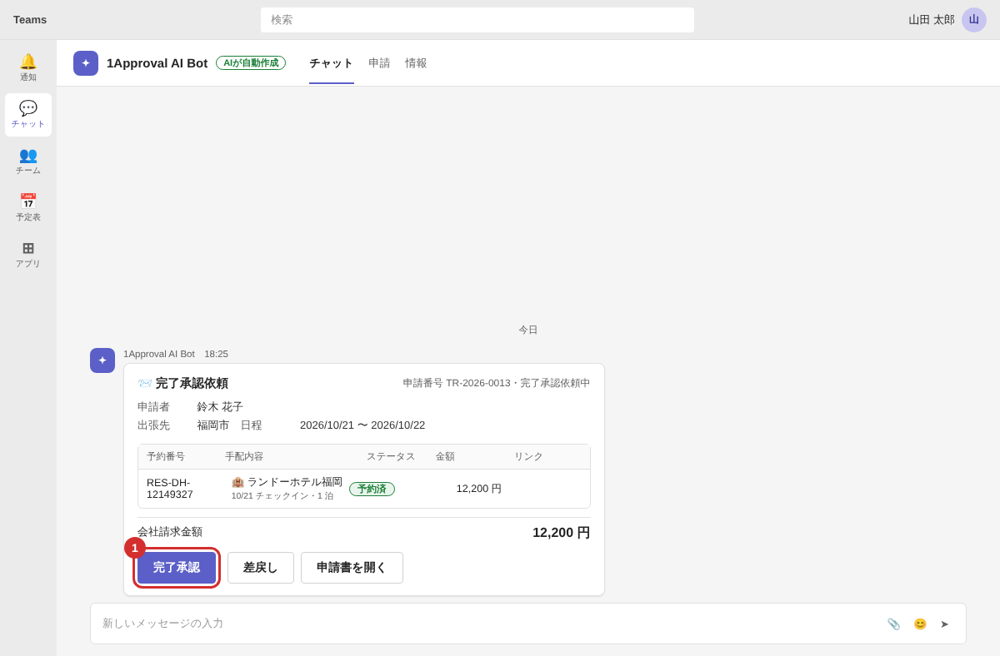
完了承認依頼中の作業者は承認者です。事前承認のときと同じく、依頼後は申請者側のボタンが消え、承認者にだけ「完了承認」「差戻し」が表示されます。
完了の確認ボットから「完了承認済」のメッセージが届けば手続き完了です。
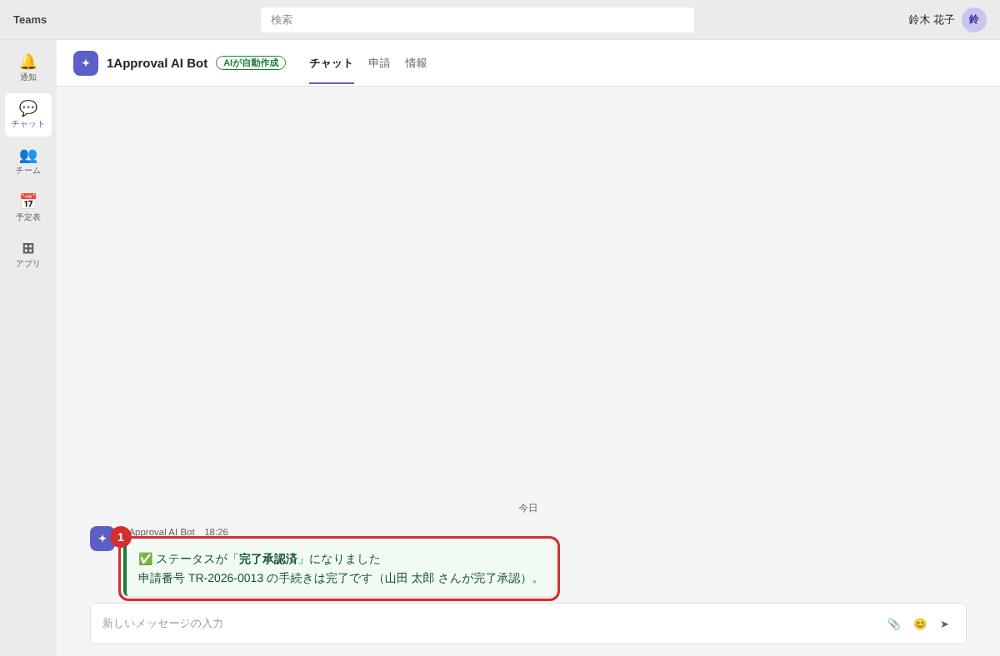
現地決済や立替の費用、証票の添付が必要な購買がある場合は、帰着後にボットから「領収書を添付してください」という案内が届きます。📄 領収書（JPG/PDF）を添付・送信する、またはチャット入力欄の添付ボタンから、領収書の画像（スマートフォンで撮影した JPG/PNG）や PDF を送信します。AI-OCR が日付・金額・店舗名を読み取って申請の明細と照合し、一致すると申請書に自動で添付されます（電子帳簿保存法に対応した形式で保存されます）。照合結果のカードで この明細に紐付ける を確認してください。
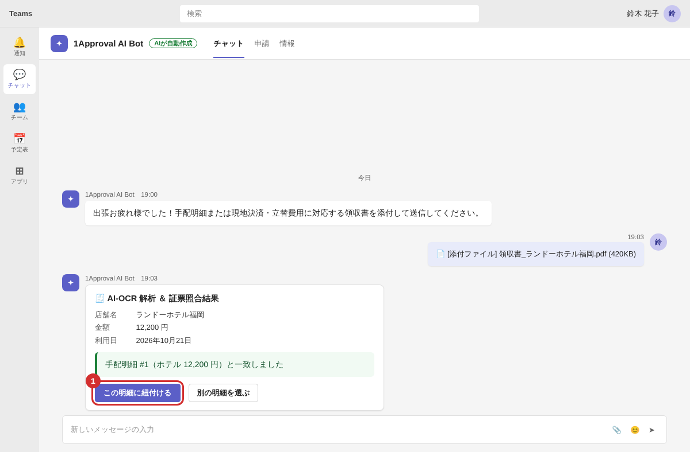
商品を選んでから発注までに時間が経つと、予約サイト側で価格が変動することがあります。変動が設定の「価格閾値」（許容変動割合）を超えていた場合の現れ方は 2 通りです。
(a) 承認の実行時に「予約サイトが発注を受け付けませんでした（価格の変動など）。承認者が差し戻し、申請者が手配をやり直してください。」と表示され、ステータスは進みません（何も発注されていません）。最新の状態を表示すると、通常は発注しようとした明細が予約失敗になっています（この明細は次の発注には含まれません）。同じ承認ボタンを押し直しても「予約失敗（またはキャンセル済）の明細が残っており、新たに発注する明細がないため承認できません。」と表示されて進みません。最新の状態を表示してから承認者が 差戻し を押してください。
・「事前承認」の実行時に出た場合: 差戻し → 申請者は 必ず 2.3 の「カートを空にする」で古い明細を消してから選び直し →「事前承認依頼」で再度依頼 → 承認をやり直します（古い明細を残したまま承認すると、あとで「予約失敗」扱いに戻ることがあります）。
・「追加承認」の実行時に出た場合: 差戻しでステータスが「事前承認済（予約失敗）」に戻り、「手配失敗サービス」に「予約サイトが発注を受け付けませんでした（価格の変動など）」と記録されます。申請者はそのサービスを手配カードから選び直して「追加承認依頼」をやり直してください（成功している予約はそのまま残ります。「予約失敗」になった古い明細は再発注されないので、消さなくてかまいません）。
(b) 発注後に明細が予約失敗になり、失敗理由に価格の変動が記録されます（例:「価格が+28.57%変動しました。再承認が必要です。」）。5.2 の流れで再手配・追加承認してください。
4予約状況の見かた
ボットのカードと申請書の予約明細の「ステータス」は次のいずれかで表示されます。
| 表示 | 意味 |
|---|---|
| 未予約 | まだ手配していない、または予約サイトで申し込んだ直後（発注前）の状態です |
| 手配中 | 承認によって発注が受け付けられ、予約サイト側の確定を待っている状態です。通常は承認から 10 秒〜数十秒で「予約済」に変わるため、この表示を目にすることはほとんどありません。確定に時間がかかる場合（係員の対応を待つときなど）は「手配中」または「仮押さえ中」のまま数時間かかることがあります（そのままお待ちください） |
| 仮押さえ中 | 発注後、予約サイト側で仮押さえの通知があった状態です（確定待ち） |
| 予約済 | 予約が確定しました |
| 予約失敗 | 予約を確定できませんでした。理由はボットからの通知と「手配失敗サービス」欄に表示されます（5.2） |
| キャンセル手配中 | 取り消しの手続き中です。この状態の明細があると承認できません |
| キャンセル済 | 取り消しが完了しました。金額は通常 0 円になります（予約サイトが取消料を通知した場合はその金額が入ります） |
このほか価格確認中・エラーという表示が定義されていますが、通常の運用では現れません。これらの明細があると承認できません（「キャンセル手配中」と同じ扱いです）。表示された場合は管理者へお問い合わせください。
5手配結果のパターン別ガイド
事前承認後の発注では、予約サイト側の事情（満室・価格変動など）により結果が分かれることがあります。まず下の表で該当するパターンを確認してください。
| 手配の結果 | 申請のステータス | 次にすること |
|---|---|---|
| すべて予約済 | 事前承認済のまま | 5.1 完了承認へ |
| 予約失敗がある（一部でも全部でも） | 自動で「事前承認済（予約失敗）」に変わる | 5.2 失敗分を再手配。出張をやめるなら 7 章 取り下げ |
| キャンセル済が混ざっている | キャンセルは失敗扱いされない | 5.3 残りの明細で判断 |
5.1 すべて予約できた
全明細が予約済になったら、そのまま 完了承認依頼 → 承認者の完了承認で手続き完了です（3.2）。
5.2 予約に失敗した明細がある（事前承認済（予約失敗））
予約サイト側の事情（満室・価格変動など）で予約を確定できなかった明細がある場合です。複数のサービス（例: ホテル + 新幹線）のうち一部だけ失敗した場合も、すべて失敗した場合（サービスを 1 つだけ手配していてそれが失敗した場合を含みます）も、流れは同じです。
- 申請のステータスが自動で「事前承認済（予約失敗）」に変わり、ボットから赤い通知（「新幹線の予約に失敗しました。追加申請を行ってください。」と失敗理由）が届きます。失敗理由は申請書の「手配失敗サービス」欄にも「サービス名: 理由」の形で記録されます。
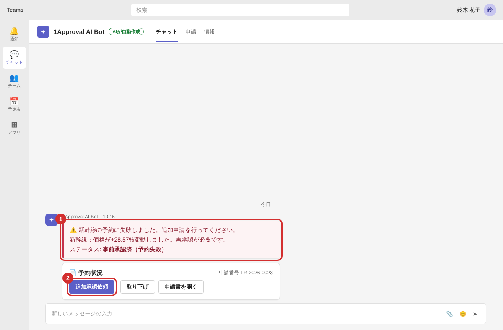
「手配失敗サービス」欄のサービス名は英語表記です: Hotel = ホテル / Train = 新幹線 / Air = 航空券（ボットの通知では「国内航空券」と表示されます）。
- 成功した予約（予約済）があればそのまま有効です。取り直しは不要です。
- 通知のカードには失敗したサービスの手配ボタンだけが表示されるので（すべて失敗した場合はすべてのサービスのボタン）、そこから再手配してください（2.1 と同じ操作）。必ず承認依頼より先に再手配を済ませます（先に依頼へ進むとボタンが表示されなくなります）。出張そのものを取りやめる場合は、再手配せずに、成功している予約を 6 章の手順でキャンセルして「キャンセル済」にしてから、7 章の手順で取り下げます（「予約済」の明細が残っていると取り下げられません）。
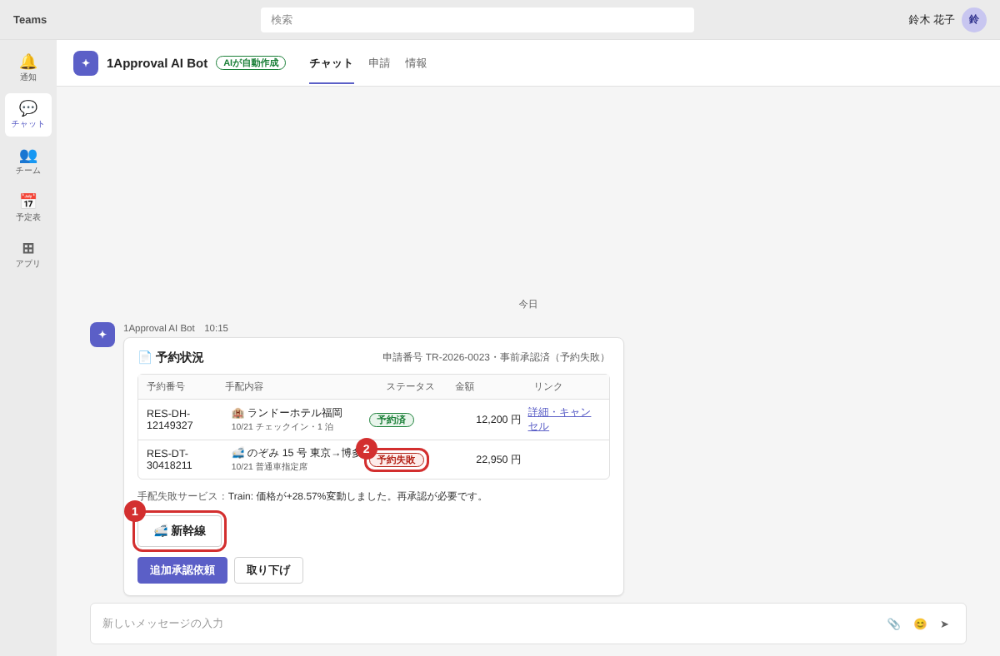
- 再手配が済んだら、申請者が 追加承認依頼 をクリックします。
- 承認者の Teams に「追加承認依頼」カードが届きます。承認者が 追加承認 を押すと、失敗分の再発注が行われ、ステータスは「事前承認済」に戻ります。全明細がそろったら完了承認へ進みます（3.2）。再手配をやり直させる場合は 差戻し（ステータスが「事前承認済（予約失敗）」に戻り、申請者が失敗分を手配し直して「追加承認依頼」をやり直せます。予約サイトが発注を受け付けなかった場合もこれです。そのとき発注しようとした明細は「予約失敗」になっており、再発注されません）。申請そのものを終える場合は 追加承認却下（この申請は終了。成功している予約は自動では取り消されないので、不要なら 6 章の手順で取り消し、必要なら申請し直します）。
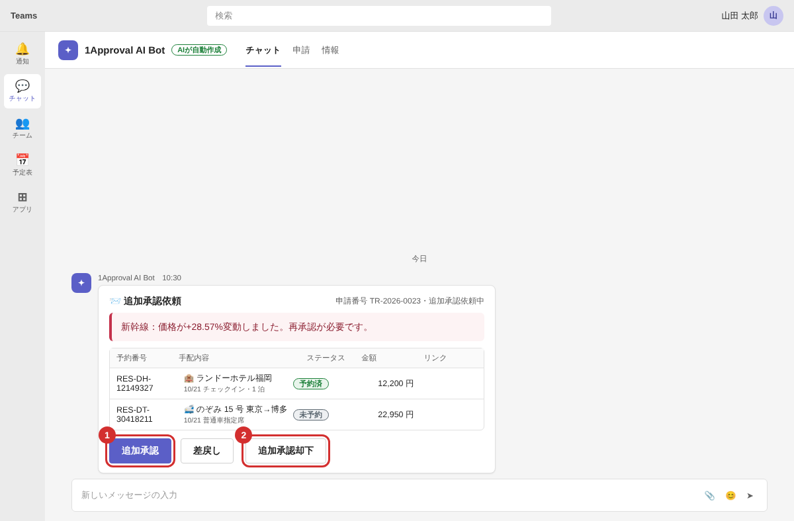
再手配をしないまま追加承認まで進むと、何も発注されずにステータスだけ「事前承認済」に戻り、失敗の通知も残ります。必ず「再手配 → 追加承認依頼」の順で進めてください。先に依頼へ進んでしまった場合は、承認後に申請者がカードの「予約失敗」ボタンを押すと手配ボタンが再び表示されます。
5.3 キャンセルが混ざっている
キャンセル済の明細は失敗としては扱われません（キャンセルだけでは「事前承認済（予約失敗）」にはなりません）。キャンセル済を除いた残りの明細の結果で、上のパターンに当てはめて進めてください。
6予約をキャンセルする
出張が取りやめになった場合は、予約サイト側で取り消しを行います。申請の明細は自動で更新されます。
- ボットのカード（または申請書の予約明細）で、取り消したい明細の 詳細・キャンセル をクリックします（発注後、「仮押さえ中」「予約済」になった明細に表示されます。発注前の明細には表示されません — その場合は予約サイトに直接アクセスしてください）。予約サイトの「出張登録確認」画面が開きます。
- 取り消したい予約の 詳細/キャンセル をクリックします。
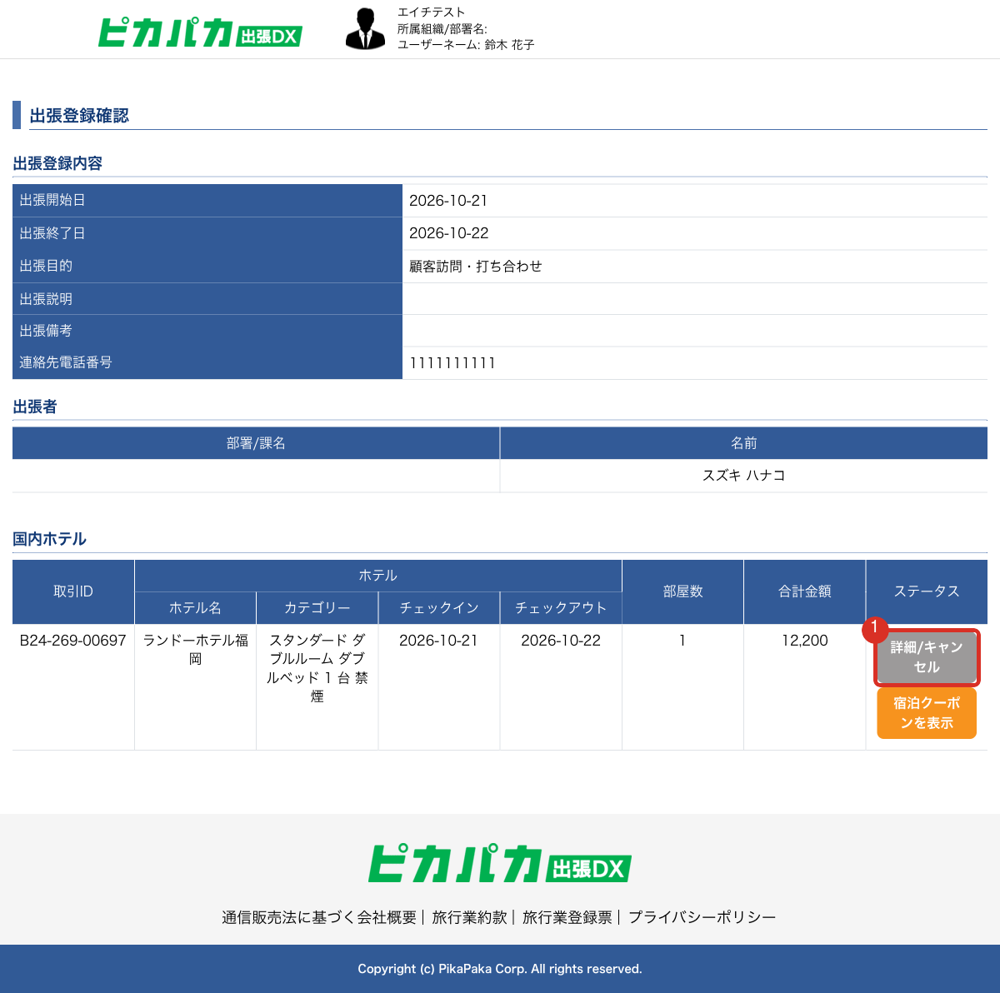
- 「お申込みのホテル」の詳細が開くので、「最終変更日・取消可能日」と「変更・取消規定」を確認し、画面下の 予約をキャンセルする をクリックします。
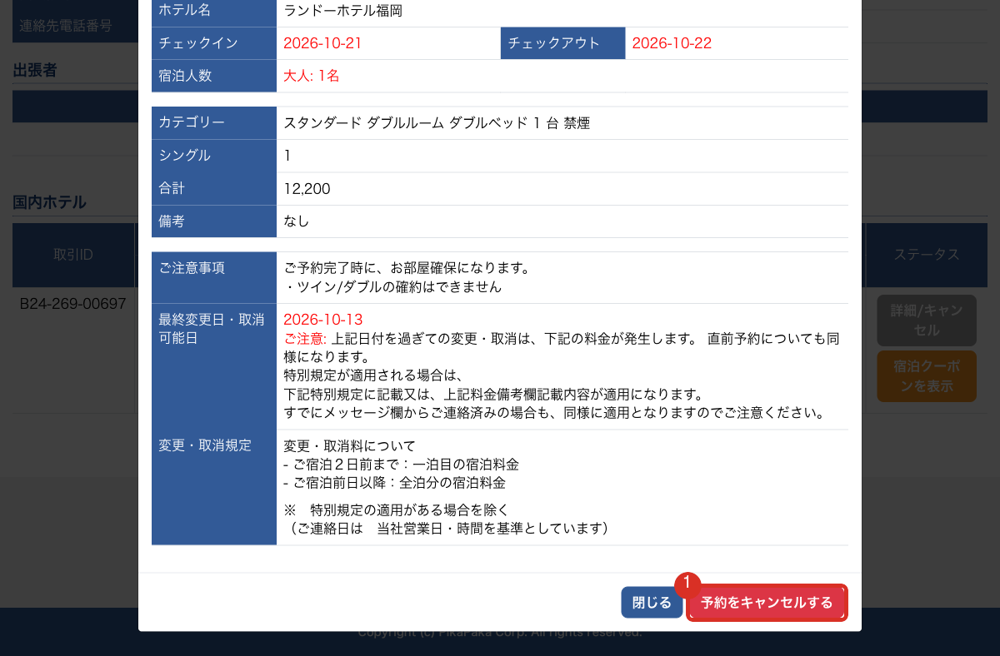
- 「予約をキャンセルしてよろしいですか？」で OK をクリックします。
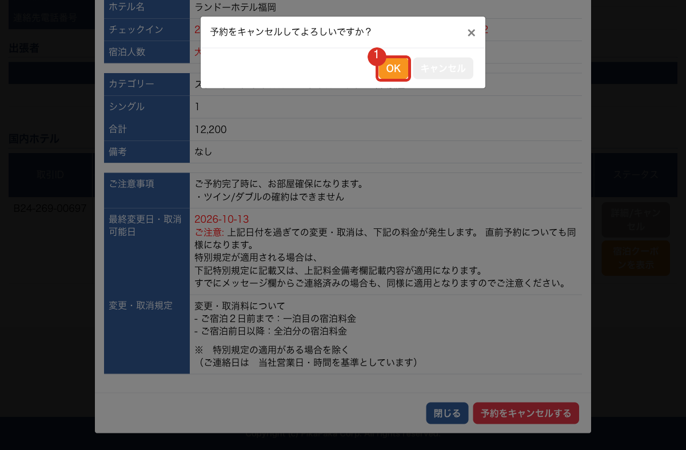
- 「キャンセルが成功となりました。」と表示されれば取り消し完了です。
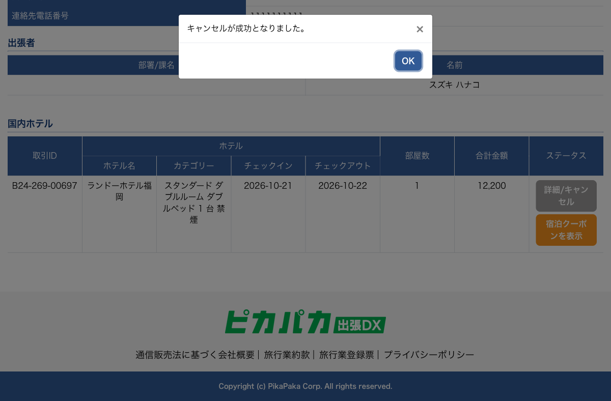
明細の予約状況がキャンセル手配中を経てキャンセル済に自動で更新され、ボットから通知が届きます。金額は通常 0 円になります（予約サイトが取消料を通知した場合はその金額が入ります。反映まで 1 分ほどかかることがあります）。
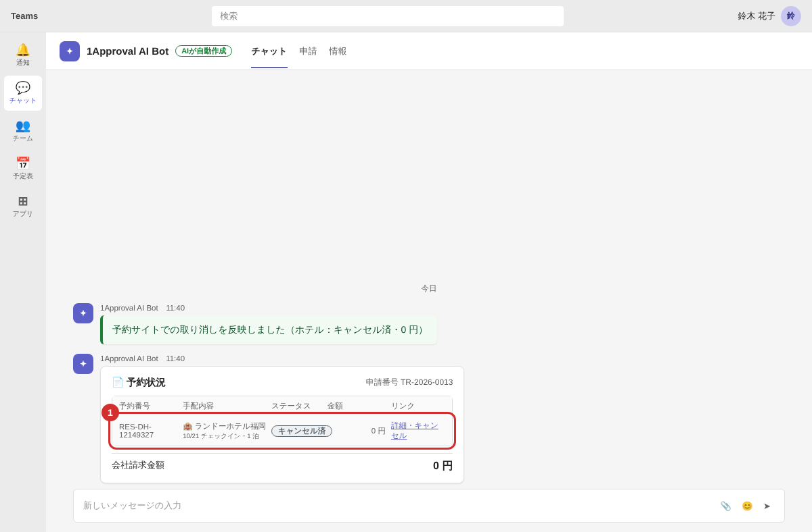
完了の確認明細が「キャンセル済」になっていれば完了です。しばらく待っても「キャンセル手配中」のまま進まない場合は自動反映が失敗している可能性があるため、管理者へお問い合わせください。
取消料の有無と発生する日付は予約サイトの「変更・取消規定」に表示されます。申し込み時に「キャンセル無料」の表示があるプランを選ぶと、規定の期日までは取消料がかかりません。
7申請を取り下げる
出張が取りやめになった申請は、申請者が「取り下げ」で終了できます。取り下げられるのは購入が成立していない申請です。
| 明細の予約状況 | 取り下げ |
|---|---|
| すべて「未予約」「価格確認中」「仮押さえ中」「予約失敗」「キャンセル済」のいずれか（明細が無い場合も含む） | できます |
| 予約済がある | できません。先に 6 章の手順で予約をキャンセルし、「キャンセル済」になってから取り下げます |
| 手配中・キャンセル手配中がある | できません。予約サイト側の結果（予約済 / 予約失敗 / キャンセル済）が出てから判断します |
- 申請のカードの 取り下げ をクリックし、確認で 実行 をクリックします。
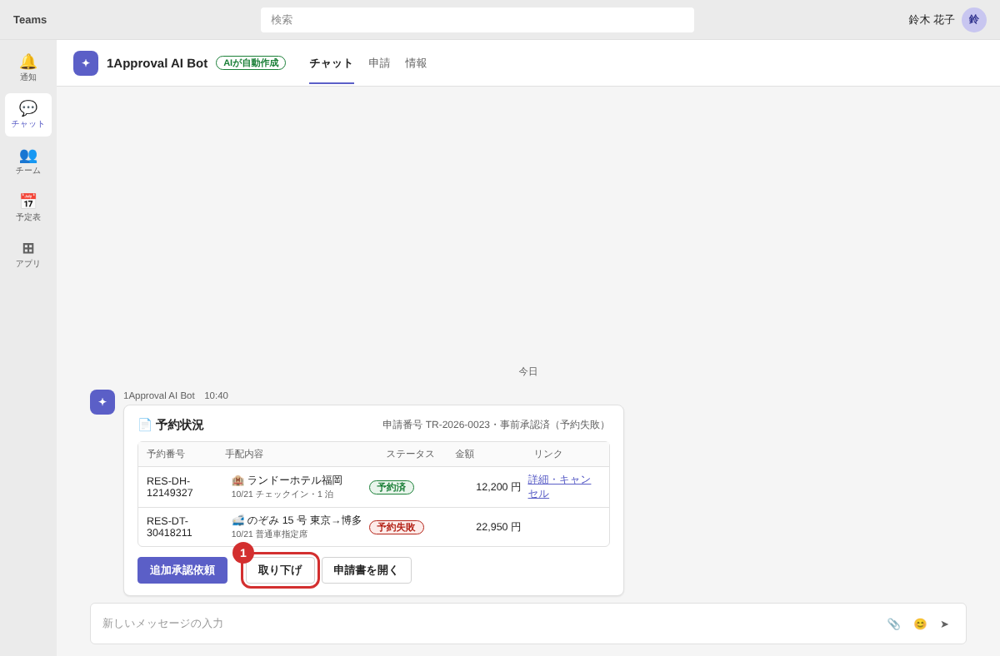
「取り下げ」(1) をクリックし、確認の「実行」(2) をクリックします。
完了の確認ボットから「取り下げ」の返信があり、ステータスが「取り下げ」になっていれば完了です。
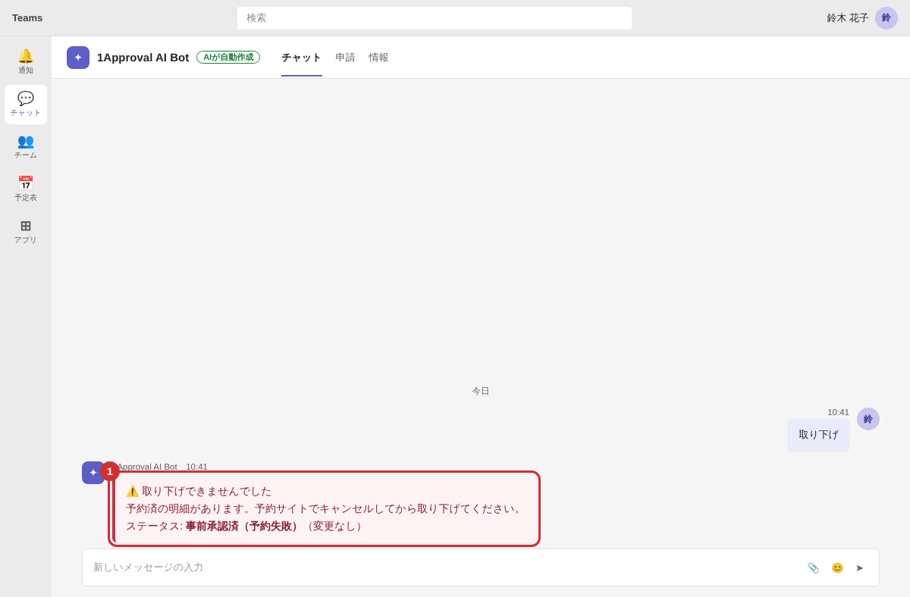
取り下げができるのは、ステータスが未処理・事前承認済・事前承認済（予約失敗）・却下のときです。承認者の確認待ち（事前承認依頼中）の申請は、承認者に 差戻し してもらうと「却下」になり、申請者が取り下げられます。追加承認依頼中の申請は、承認者に 差戻し してもらうと「事前承認済（予約失敗）」に戻り、申請者が取り下げられます（成功している予約が残っていれば、先に 6 章でキャンセルします）。承認者の 追加承認却下 はこの申請を終了します。
「予約済の明細があります。予約サイトでキャンセルしてから取り下げてください。」と表示されたときは、6 章の手順で予約をキャンセルし、明細が「キャンセル済」になってから取り下げます。「手配中の明細があります。手配の結果が出てから取り下げてください。」と表示されたときは、明細の予約状況が「予約済」「予約失敗」「キャンセル済」のいずれかになるまで待ちます。ステータスは変わりません。
取り下げのあとに予約サイト側で予約が確定すると、明細は「予約済」に変わります。取り下げた申請に「予約済」の明細が付いたときは、6 章の手順で予約をキャンセルしてください。
取り下げた申請は元に戻せません。改めて出張を手配する場合は、出張申請フォームを開く から新しい申請を作成してください。
8一覧と CSV 出力
一覧の確認
申請の一覧と CSV 出力は、連携先ワークフロー（SharePoint の出張申請サイト）の画面で行います。Teams のチャットには進行中の申請のカードが履歴として残るので、個別の申請はカードの 申請書を開く から確認できます。
| 一覧 | 表示される申請 |
|---|---|
| （作業者が自分） | 自分が次に操作する申請 |
| すべて | すべての申請。ステータス・金額・承認者を一覧できます |
| 出張者が自分 | 出張者が自分（ログイン中のユーザー）の申請 |
| 完了承認済み | ステータスが「完了承認済」の申請 |
| 完了承認未実施 | ステータスが「事前承認済」または「完了承認依頼中」の申請（事前承認済（予約失敗）・追加承認依頼中の申請は含みません） |
出張申請サイトの「出張申請」リストを開き、右上のビューの切り替えで一覧を選びます。CSV はコマンドバーのボタンから出力します。
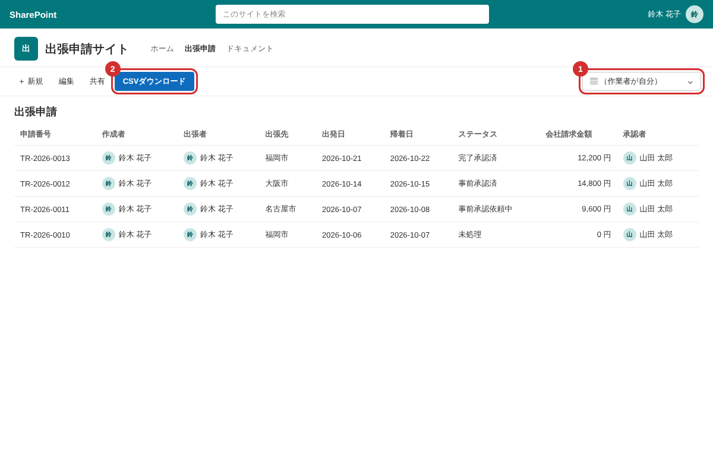
切り替えのメニューを開くと、上の表の一覧が並びます。
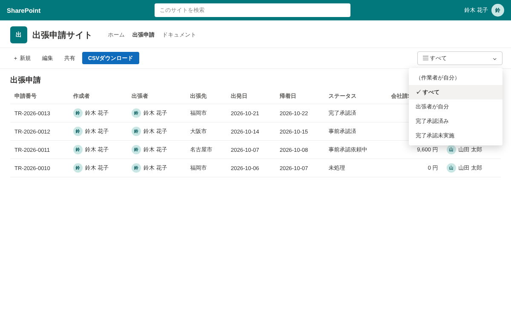
CSV 出力（経理ご担当者向け）
連携先ワークフローの一覧画面の CSVダウンロード から、設定の「CSV 出力対象ステータス」（既定: 完了承認済）の申請の実績を CSV でダウンロードできます。ボタンは管理者と、設定で許可されたユーザーにのみ表示されます（ただし、これは連携先ワークフローの権限設定とは別です。下の注意をご覧ください）。
CSV ダウンロードは、操作している方の連携先ワークフローの権限で申請を読み出して出力します。申請の閲覧権限がある方は、CSV のデータを取得できます（絞っているのはボタンを表示するかどうかだけで、アクセス制限ではありません）。閲覧させたくない申請や項目は、連携先ワークフローのアクセス権で制限してください。ただし、申請者・承認者が予約明細（ホテル・新幹線・航空券）を閲覧できる状態は保ってください（見えないと、承認しても発注されないまま進みます）。項目やアクセス権を絞る前に、導入手順書の「アプリをカスタマイズするとき」をご確認のうえ、1approval 事務局へご相談ください。
- 一覧画面の CSVダウンロード をクリックします。
- 実績発生日（開始）・（終了）で期間を指定します。
- パターンで出力する種類を選びます: ホテル / 飛行機、新幹線 / 経費精算。
- ダウンロード をクリックします。
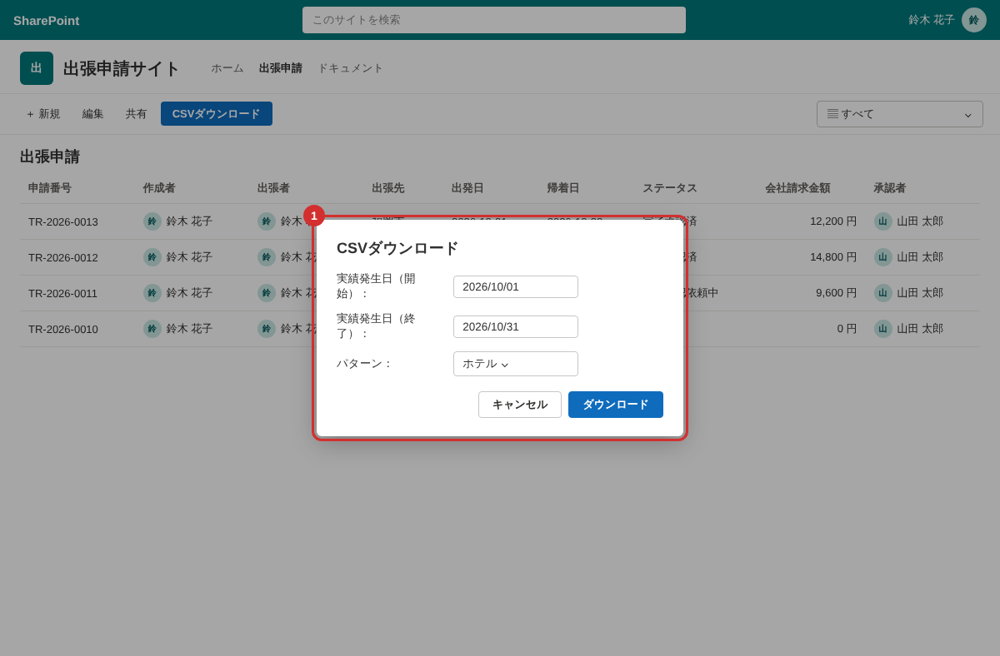
「実績発生日」は、ホテルはチェックアウト日（未設定の場合は利用日）、新幹線・航空券は利用日、経費精算は利用日で判定します。一度に出力できるのは 5,000 件までです。ボタンはパソコン版の一覧画面にのみ表示されます（スマートフォン版・Teams のチャットにはありません）。該当がない場合は「該当するデータが見つかりませんでした。」などと表示されます。
CSV に含まれるのは、設定「CSV 出力対象ステータス」で選ばれたステータス（既定: 完了承認済）の申請です。貴社で独自のステータス（経理確認中など）を追加している場合は、CSV を出す段階のステータスを選んでください。集計の締めまでに、対象のステータスへ進めておいてください。
ホテル・交通機関のパターンには末尾に「予約状況」列があります。「予約失敗」「キャンセル済」の明細も行として出力されるので、この列で判別して集計から除いてください。Teams から提出した領収書は申請書の添付ファイルに保存されています。
9困ったとき
| 症状 | まず確認すること |
|---|---|
| Teams に 1Approval AI Bot が見つからない | Teams の アプリ で「1Approval」を検索して追加してください。表示されない場合は、貴社の Teams 管理者がアプリを許可していない可能性があります。管理者へ |
| 手配カード（手配ボタン）が表示されない | 申請フォームを保存して申請番号が発行されているか。手配ボタンが使えるのはステータスが「未処理」「却下」「事前承認済（予約失敗）」のときだけです（事前承認済（予約失敗）では失敗したサービスのみ）。➕ 手配を追加する でカードを出し直せます。それでも表示されない場合は管理者へ |
| 手配ボタンを押しても何も起きない | Teams を最新の状態にし、ボットとのチャットを開き直してからもう一度押してください。ブラウザ版の Teams をお使いの場合は、ポップアップブロックで予約サイトが止められていないか（アドレスバーのブロック表示）も確認してください |
| ボタンを押すと「予約サイトに出張者が登録されていないため、手配を開始できません。」と表示された | 出張者（利用者）が予約サイトに登録されていません。予約サイトへの登録を管理者に依頼し、登録後にもう一度押してください（出張者を登録済みの方に変えても手配できます） |
| ボタンを押すと「予約サイトが手配の受付を拒否しました。理由: …」と表示された | 予約サイトが申請内容を受け付けていません。表示された理由（予約サイトからの英語の文言です）をもとに出張者や日付を確認して直し、解決しない場合や意味が分からない場合は理由の文言を添えて管理者へ |
| ボタンを押すと「購入サイトへの接続に失敗しました。管理者にお問い合わせください。」と表示された | 予約サイトへの接続そのものに失敗しています。時間をおいて再度押し、繰り返す場合は管理者へ |
予約サイトで申し込んだのに「予約内容を申請に取り込みました」が届かない／英語のエラー画面（"success":false …）が表示された | 予約内容の書き込みに失敗しています。予約サイト側の申し込みは成立しているため、買い直さないでください（二重予約になります）。画面のスクリーンショットを添えて管理者へ |
| 予約サイトでエラーになった | 画面のメッセージを控えて（スクリーンショット推奨）管理者へ |
| 承認者に承認カードが届かない | 申請の承認者が正しいか、承認者の Teams に 1Approval AI Bot が追加されているかを確認してください。承認者は申請書の詳細画面から承認することもできます |
| 承認したのに明細が「手配中」「仮押さえ中」のまま | 予約サイト側の確定待ちです。係員の対応を待つ場合は数時間かかることがあります。それ以外で数分経っても「予約済」にならない場合は確定が遅れているか失敗している可能性があります。再度承認し直さず、管理者へ |
| 承認したのに明細が「未予約」のまま | 発注が受け付けられていないか、受け付けの記録に失敗しています（この場合はしばらくして「予約済」に変わることがあります）。最新の状態を表示しても変わらない場合は管理者へ（再度承認し直さないでください） |
| 「注文の完了がタイムアウトしました。申請の状態を確認してください。」と表示された | 発注そのものは送られている場合があり、ステータスは「事前承認依頼中」のままです。最新の状態を表示して明細を確認し、3.1 の条件（「未予約」の明細が残っていないこと。手配中・仮押さえ中の明細は再送されません）を満たしてから承認をやり直してください |
| 「予約サイトが発注を受け付けませんでした（価格の変動など）。」と表示された | 予約サイトが発注を拒否したため何も発注されていません（発注しようとした明細は「予約失敗」になります）。3.2 の (a) の手順（差戻し → 再手配 → 事前承認依頼）へ。追加承認の実行時に出た場合は、承認者の「差戻し」で「事前承認済（予約失敗）」に戻り、「手配失敗サービス」に記録されたサービスを選び直して追加承認依頼をやり直せます |
| 「注文の送信に失敗しました。管理者にお問い合わせください。」と表示された | 通信の失敗や予期しないエラーです。最新の状態を表示して明細がすべて「未予約」のままなら発注されていません。判断がつかない場合は再操作せず管理者へ |
| 「予約情報が不足しているため発注できません。手配をやり直してください。」と表示された | 明細の内容が予約サイトの情報と合っていません。該当サービスの手配をやり直してください |
| 「予約失敗（またはキャンセル済）の明細が残っており、新たに発注する明細がないため承認できません。」と表示された | 予約失敗の明細が残っているのに新しく発注する明細が無い状態（発注拒否のあとに同じ承認ボタンを押し直した場合など）で、承認を進めても何も発注されないため止めています。承認者が「差戻し」し、申請者が手配をやり直してください（3.2 の (a)）。手配中・仮押さえ中の明細がある場合（タイムアウト後の承認のやり直し）は止まりません |
| 金額が申請時と違う | 価格変動の可能性があります。3.2 と 5.2 の流れをご確認ください |
| 「キャンセル手配中」のまま進まない | 自動反映が失敗している可能性があります。管理者へ |
| 領収書を送ったのに明細と照合されない | 画像がぼやけていないか、日付・金額・店舗名が写っているかを確認して撮り直してください。照合できない場合は、照合結果のカードから対象の明細を選んで紐付けるか、管理者へ |
| 「取り下げ」を押すと「予約済の明細があります。予約サイトでキャンセルしてから取り下げてください。」と表示された | 購入が成立している明細があります。6 章の手順でキャンセルし、「キャンセル済」になってから取り下げてください（7 章） |
| 「取り下げ」を押すと「手配中の明細があります。手配の結果が出てから取り下げてください。」と表示された | 予約サイト側で手配が進んでいます。明細が「予約済」「予約失敗」「キャンセル済」のいずれかになってから判断してください（7 章） |
解決しない場合は、申請番号・発生日時・画面のメッセージを添えて社内の管理者へお問い合わせください。
10アプリを変更するとき（管理者向け）
連携先ワークフローの項目・一覧・通知・承認経路や、Teams アプリの設定を変えるときに、変えてよいもの・変えてはいけないものは、導入手順書の「アプリをカスタマイズするとき」にまとめています。特に次の点にご注意ください。
- 初期設定で作った項目の削除・列の内部名の変更、ステータス名・アクション名の変更はしないでください（承認時の発注や、予約内容の書き戻し、Teams への通知が動かなくなります）。項目の表示名の変更や、項目・一覧の追加はできます。
- 連携先ワークフローの一括承認機能や、Power Automate などでステータスを自動で進める仕組みとは併用できません（3 章の注意）。
- Teams の 1Approval AI Bot は、Teams 管理センターで申請者・承認者の全員が使える状態にしてください（承認者が使えないと承認カードが届きません）。
- CSV ダウンロードのボタンの表示の制限は、連携先ワークフローの権限設定とは別です（8 章の注意）。
付録: 用語
| 用語 | 意味 |
|---|---|
| 1Approval AI Bot | Teams で出張の申請・手配・承認・領収書の提出を行うためのチャットボット |
| 連携先ワークフロー | 申請の正式な記録を保存する貴社のワークフロー（Microsoft 365 SharePoint） |
| 手配カード | ボットが表示する「🏨 ホテル」「🚅 新幹線」「✈️ 航空券」のボタンが並んだカード。クリックで予約サイトへ移動します |
| 承認カード | 承認者の Teams に届く、申請内容と「承認する」「差戻し」のボタンが並んだカード |
| 申請者 | 申請フォームを保存した方。承認後の操作のカードはこの方に届きます |
| 申請番号 | 申請フォームの保存時に発行される番号。連携先ワークフローの申請書と共通です |
| 予約番号 | 予約サイトが発行する番号（例: RES-DH-…）。申請の予約明細に自動で入ります |
| 事前承認 | 承認者による最初の承認。このときに予約サイトへ発注されます |
| 完了承認 | 最終承認。CSV 出力の対象になります |
| 事前承認済（予約失敗） | 承認は済んでいるが予約に失敗した明細があるときのステータス。失敗分を再手配して追加承認を受けるか、取り下げます |
| 取り下げ | 申請者が申請を終了するときのステータス。購入が成立している明細があるときは、先に予約をキャンセルします |
| 手配失敗サービス | 失敗したサービスと理由が記録される欄（Hotel / Train / Air） |
| AI-OCR 照合 | Teams で送った領収書の日付・金額・店舗名を読み取り、申請の明細と自動で照合する機能 |